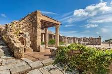

- Home
-
Djerba

Djerba is an island in southeast Tunisia, renowned for its beautiful beaches, traditional architecture, and relaxed atmosphere.
-
Bizerte

Bizerte is a port city located in northern Tunisia. It is known for its rich history, old port, and picturesque beaches.
-
Hammamet

Hammamet is a popular seaside resort on the east coast of Tunisia. It is renowned for its beaches, lush gardens, and charming medina.
-
Tozeur

Tozeur is an oasis in the Tunisian desert, known for its palm groves, lush gardens, and traditional clay brick architecture.
-
Tataouine

Tataouine is a region in southern Tunisia famous for its desert landscapes, troglodyte villages, and its role in the Star Wars saga.
Carthage

Explore the ancient ruins of Carthage and delve into its rich history.
Sidi Bou Said

Experience the charm of the blue and white village overlooking the Mediterranean.